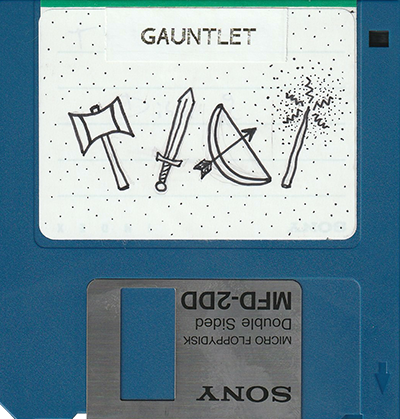

Floppy Disk Art!
After getting a blueSCSI I started loading up some recycled floppy disks with games and programs for my Macintosh SE. When I finished putting the labels on them I was left unsatisfied with the huge white space staring back at me, so I started doodling on a couple of the labels, and me being me, it quickly led to making doodles for all of them.
